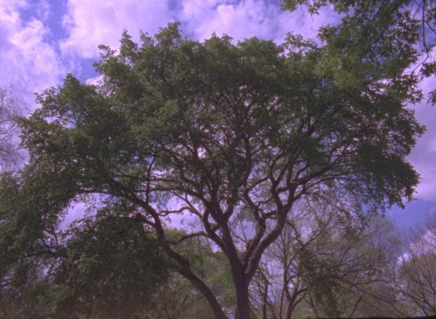

{kind=link}
The Tree

Henry Hills
|
AT
/ US 2019
|
Tuesday 15 oct | 8.30 pm | Werkstattkino | Short Film
Night
“I had shot a B&W reversal camera roll of this tree as my contribution to the ´A Roll for Peter´ memorial for Peter Hutton and, happy with the result, pursued it further, adding color negative even. In the mid-1970’s as I was beginning to work in film I started an in-depth study of discontinuous single-frame editing as perceptual enhancement training. This footage, 40 years later, filmed primarily as continuous shots over all four seasons, has been deconstructed into single frames, reconstructed through a variety of scored arrangements, and edited into a composition in Adobe Premiere on my laptop.” (Henry Hills)
Henry Hills has been making experimental films since 1975. In New York's East Village he worked with composer John Zorn and choreographer Sally Silvers. Since 2005 he has been a visiting professor at the FAMU in Prague. Hills currently lives in Vienna. |
Films Porter Springs 2 1976 | Notes on Marie Menken 2006 | Failed States 2008 | Arcana 2011 | Fragements of Kubelka 2012 | The Falls 2019 | The Tree 2019 |